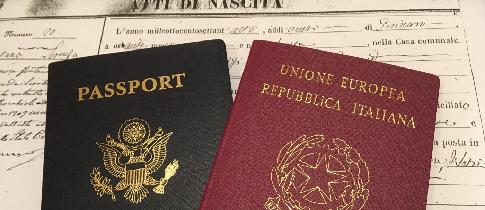
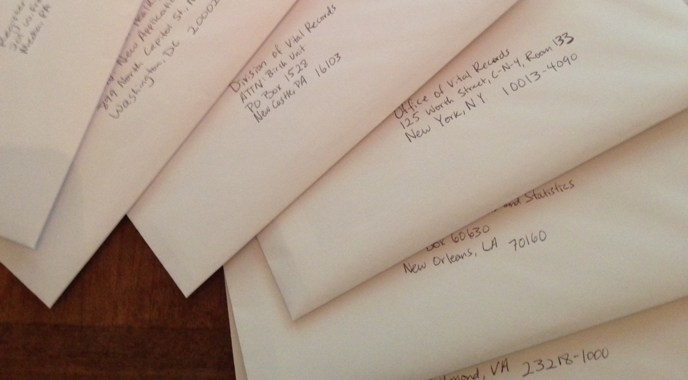

Do you have an Italian ancestor who is your parent, grandparent, or great-grandparent? If so, you may have a right to Italian citizenship.
This post covers the steps that worked for me.
I am not a lawyer and this is not legal advice. This is a description of my personal experience. For me, this process worked to get the documents required for me and others in my family to get Italian citizenship and passports.
If you choose to manage some or all of the process yourself, you will save some money but you will make many phone calls and mail many letters back and forth with various local, state, and federal governments. You will need to correspond with more different governments if your ancestors moved a few times or if there are many generations between you and your last recognized Italian ancestor.
The goal is to acquire the necessary documentation to prove you are Italian during an official appointment at an Italian consulate. The common name for the right to Italian citizenship by ancestry is jure sanguinis.
There are basically two ways nation states determine citizenship.
Italy has one of the most generationally inclusive jus sanguinis laws. It recognizes many people with a parent, grandparent, or great-grandparent as a rightful Italian citizen — if you can prove it.
The law requires an “unbroken blood line” between you and your Italian ancestor.
Let’s consider the family line that connects you to your Italian ancestor. For example, my family line to my Italian ancestor looks like this:
Next, let’s consider a situation that could “break” the “blood line” to your Italian ancestor:
If not, you are almost certainly eligible for Italian citizenship. The process required and difficulty involved will depend on the answers to the next questions about your family history.
With your family line in mind, let’s consider the following questions to get a sense of situations that could make the process more complicated for you.
If your family lineage includes one of the situations above, you might consider talking to people who specialize in Italian citizenship cases. I recommend Lauren at Your Italian Passport and would be happy to introduce you to her via email if you ask me.
You must apply for Italian citizenship at the consulate designated for your region, according to the address on your driver’s license or other government-issued ID. If you live in the US, the list of consulates is here.
Once you find your consulate, make an appointment to apply for citizenship jure sanguinis. The typical waiting period for an appointment is about 18 months. I called in early 2016 and got an appointment in late 2017.
Phew. This is the longest step.
You can gather all of the documents yourself or hire someone else to do it for you, or a combination of both.
I gathered all the US vital records, apostilles, USCIS documents, National Archives documents and county government proof of non-existence of naturalization records myself. I worked with Lauren from Your Italian Passport for some Italian documents and for translation of the US vital records. Finally, I compiled the binder of all completed documents myself.
For every person in your Italian family lineage back to your Italian ancestor, including spouses, you will need:
Also, for your Italian ancestor, you will need:
All documents must be the official or certified version. In most cases you can get this version by requesting, for example, the “certified birth certificate” from the original issuing authority and paying an additional fee. The issuing authority is the municipality (e.g., city or county) where the ancestor was born.
Documents not issued in Italy must be translated and affixed with an apostille, which is a fancy verification.
In the US, each state has its own apostille process and you must get an apostille from the state in which a document was issued. For example, my grandfather was born in Louisiana, married in New York, and died in Virginia. For each of those documents, I needed to get an apostille from each of those states — plus one for each other life event that requires documentation from the family member that experienced the life event.
Once you have all the apostilles for all your documents, it’s time to have the documents translated. This is not a good time to rely on Google Translate. The Italian jure sanguinis reviewers are very particular about the translation being exact and I have heard that they will reject applications for inaccurate translations. With such a long waiting period for another appointment, I would highly suggest hiring a professional translator.
On the day of your appointment, you will need to bring:
I hope you enjoy this opportunity to learn your family history. I certainly did.
In bocca al lupo!